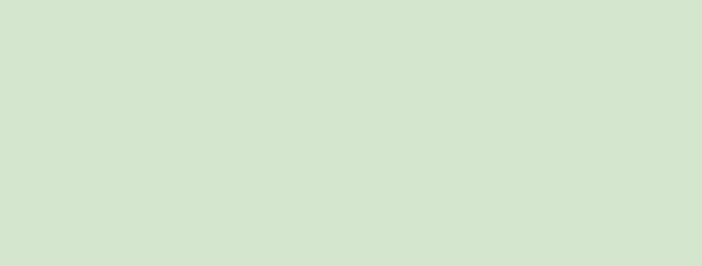

Rollerskate Spots Australia
Queensland Skatespots / Lovers' Walk
This location boasts a smooth ride along the Sandgate Foreshore to the Shorncliffe Pier. You can continue to the end of the concrete path to find a large kids playground and small unsupervised, waveless beach.
Slope: Flat
Surface: Smooth Concrete
Cracks: Small
Difficulty: Beginner